The wedding of
Bila
& Adit
08.08.2026
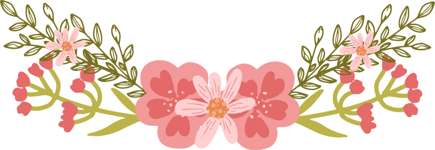
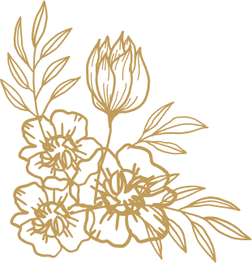
"Dan di antara tanda-tanda (kebesaran)-Nya ialah Dia menciptakan pasangan-pasangan untukmu dari jenismu sendiri, agar kamu cenderung dan merasa tenteram kepadanya, dan Dia menjadikan di antaramu rasa kasih dan sayang. Sungguh, pada yang demikian itu benar-benar terdapat tanda-tanda (kebesaran Allah) bagi kaum yang berpikir."
( QS. Ar-Rum Ayat 21 )
Build & Room
Tanpa mengurangi rasa hormat, perkenankan kami mengundang Bapak/Ibu/Saudara/i untuk berkenan hadir dan memberikan doa restu kepada kedua mempelai."
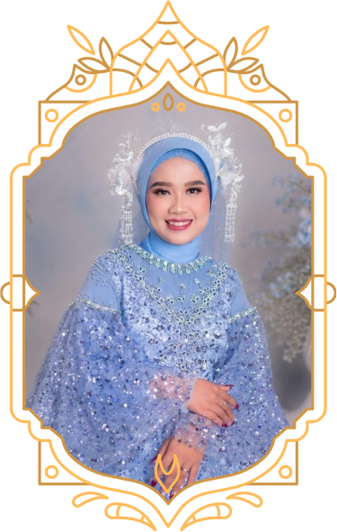
Cintya Nabila S.Pd
Putri ke-2 Dari Bapak Mastur Hadi (Bebeh) dan Ibu Aminah
&
Aditya Darmawan S.Pd
Putra ke-2 dari Bapak Suheri (alm) dan Ibu Tursilawati (almh)
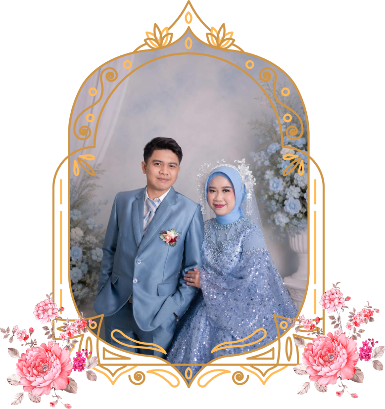
Save The Date
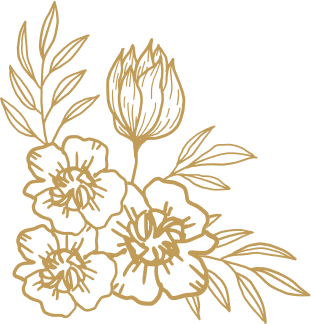
Akad
Sabtu, 08 Agustus 2026
Pukul 09.00 WIB
Kp Jaha, Jl Rambutan, RT 05/RW 011, Kel. Jati Mekar,
Kec Jatiasih, Bekasi
(Patokan galeri sanggar rias weni)
Resepsi
Sabtu, 08 Agustus 2026
Pukul 12.00 WIB - Selesai
Kp Jaha, Jl Rambutan, RT 05/RW 011, Kel. Jati Mekar,
Kec Jatiasih, Bekasi
(Patokan galeri sanggar rias weni)
Lovely Story
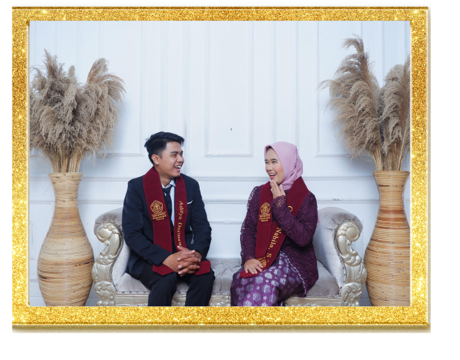
Awal Bertemu
Kami dipertemukan sebagai mahasiswa di kampus yang sama. Awalnya, kami hanyalah dua orang yang saling mengenal tanpa ada cerita yang istimewa.
Pendekatan
21 April 2023Seiring berjalannya waktu, kami semakin mengenal dan memahami satu sama lain. Kami memutuskan untuk menjalani sebuah hubungan dengan niat saling menjaga, saling mendukung, dan bertumbuh bersama.
Lamaran
03 Januari 2026Setelah melewati perjalanan yang panjang dan menyelesaikan masa perkuliahan hingga wisuda, kami semakin mantap untuk melangkah ke jenjang yang lebih serius. Dengan restu kedua keluarga, pada 03 Januari 2026, kami melangsungkan acara lamaran sebagai tanda keseriusan untuk membangun masa depan bersama.
Pernikahan
08 Agustus 2026Bukan karena bertemu lalu berjodoh, tetapi karena berjodohlah kami dipertemukan. Dengan penuh rasa syukur kepada Allah SWT, kami akan mengikrarkan janji suci pernikahan pada 08 Agustus 2026. Semoga hari yang penuh berkah ini menjadi awal dari ibadah terpanjang kami.
Gallery Foto
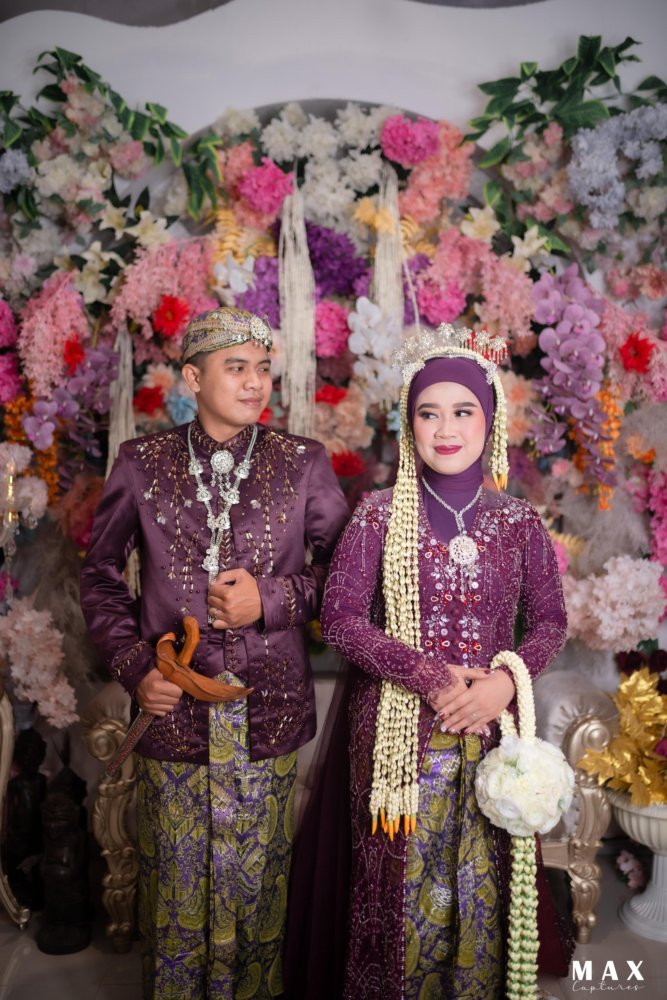
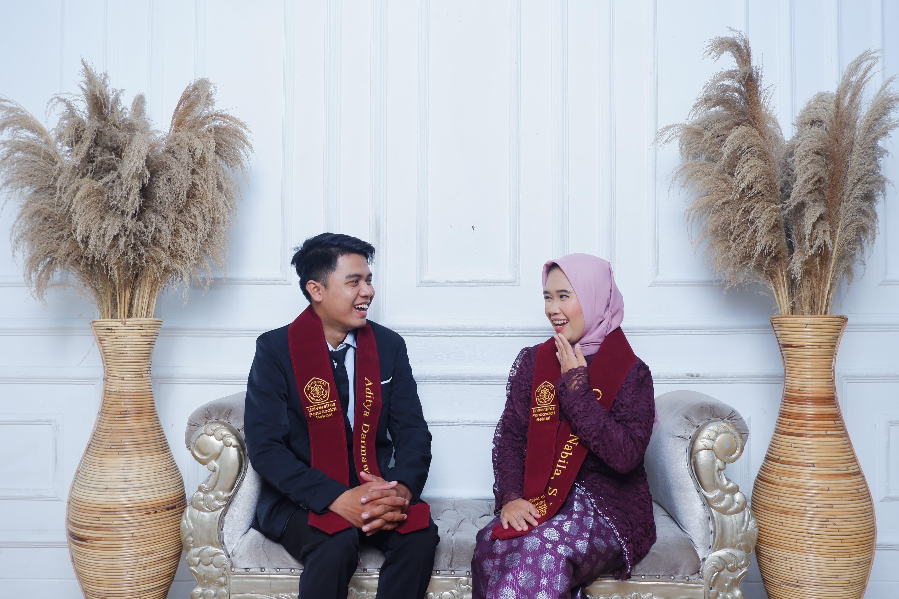
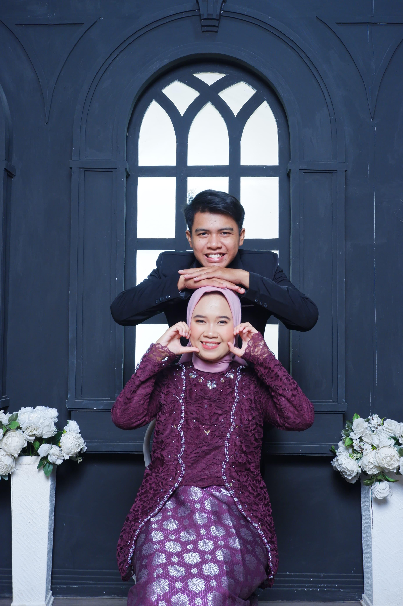
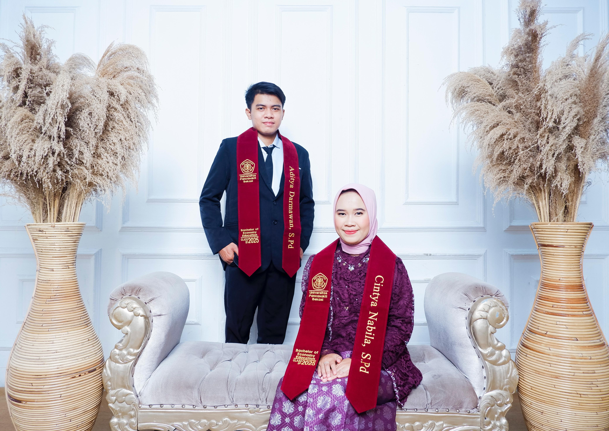
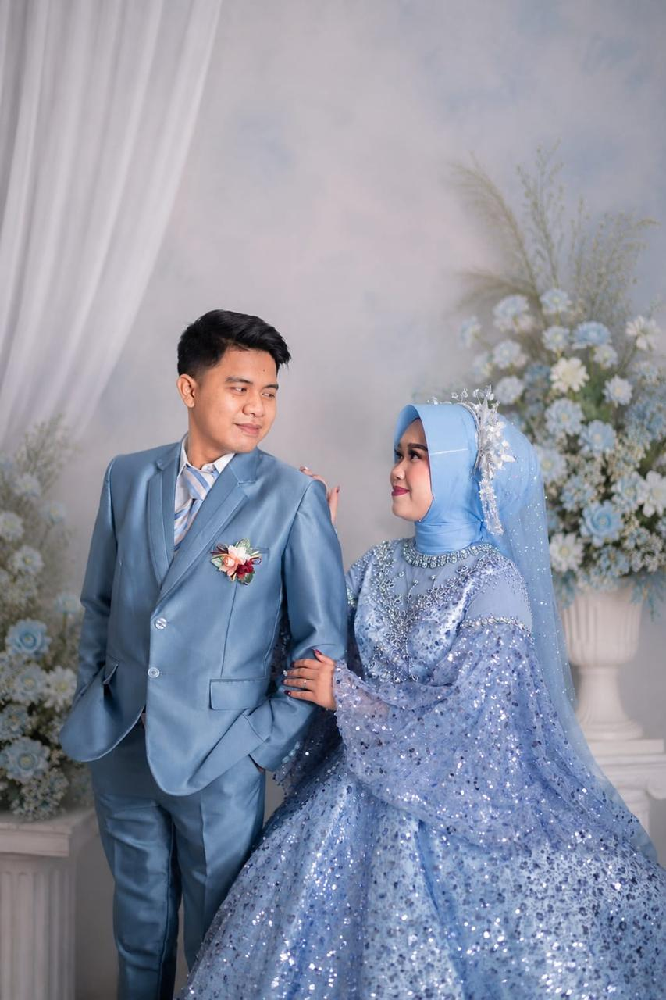
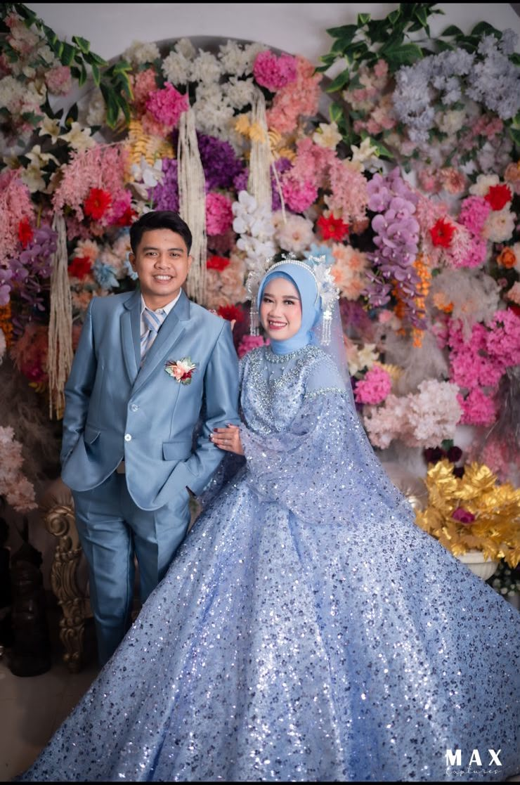
Wedding Gift
Bapak/Ibu/Saudara yang ingin mengirimkan hadiah pernikahan dapat melalui virtual account atau e-wallet di bawah ini:
Ucapan Sesuatu
Berikan ucapan harapan dan doa kepada kedua mempelai
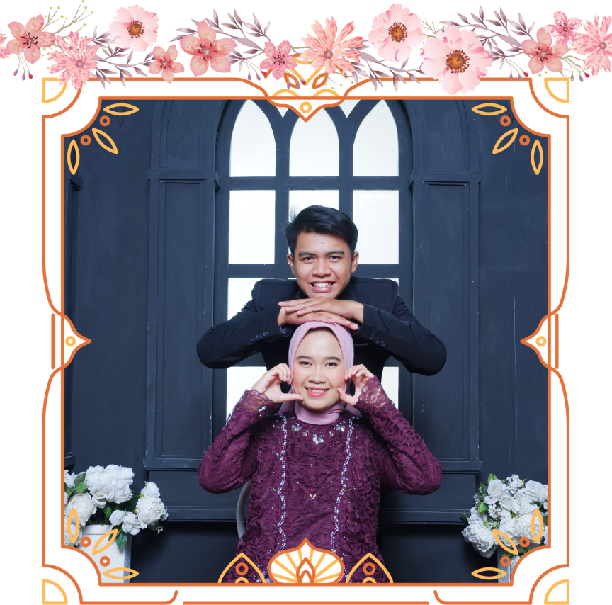
merupakan suatu kehormatan dan kebahagian bagi kami apabila Bapak/Ibu/Saudara/i berkenan hadir dan memberikan doa restu, dan atas kehadiran dan doa restunya, kami ucapkan terima kasih.
kami yang berbahagia.